The classes you've used so
far—ordinary classes, if you will—are called
concrete classes. Java also allows you to
create a second kind of class, called an
abstract class.
An abstract class is usually an incomplete class, a class that contains certain methods that are specified, but not implemented in the definition of the class. Because the abstract class contains these incomplete methods, it cannot be used to create objects—it can only be used as a superclass when defining other classes. That is, it only makes sense in the context of inheritance.
Two Types of Inheritance
In the last chapter you learned that inheritance is a form of specialization, with the new subclass inheriting both the methods and the instance variables from its superclass, while optionally adding more of both. Thus we can say that the subclass is-a specialized form of the more generic superclass.
There's actually a second form of inheritance, though, called specification inheritance. In contrast to the extension relationship, which we've been using up to this point, a superclass may simply specify a set of responsibilities that a subclass must fulfill, but not provide any actual implementation. In this case, the only thing inherited is the interface (or method signatures) from the superclass.
The most common way that this specification relationship is used is in combination with regular extension. In this form,
- the subclass inherits the interface of the superclass, as it does in specification,
- but it also inherits a default implementation of, at least, some of its methods.
In this form of inheritance, the subclass may override an inherited method to provide specialized behavior, or it may be required to provide an implementation for a particular method, which could not be provided in the superclass. This form of inheritance is often called polymorphic inheritance, because its principal value lies in its ability to provide specialized behavior in response to the same messages.
Polymorphic Inheritance
 Suppose, for instance, that you want to create a drawing
program, like Visio, that can draw all kinds of shapes.
When writing your program, you might have an abstract
Suppose, for instance, that you want to create a drawing
program, like Visio, that can draw all kinds of shapes.
When writing your program, you might have an abstract Shape
superclass that doesn't have the faintest notion of how to
implement its abstract draw() method, yet it knows that
each of its concrete children will need to do so.
Only the concrete
classes derived from Shape—Circle,
Square, and Star—for instance,
possess the necessary knowledge to actually draw()
themselves.
So, abstract classes provide a way of guaranteeing that an object of a given type will understand a given message. In that sense, they specify a set of responsibilities that a subclass must fulfill. This is important, because a Java program that tries to send a message to an object that doesn't understand the message will malfunction.
Interfaces perform a similar role, and you'll learn more about them in the next chapter. Interfaces, though, are a type of pure specification. Abstract classes can also contain fields and regular methods, though, so unlike an interface they can provide a default implementation of a capability that their subclasses are intended to perform.
Creating Abstract Classes
Creating an abstract class is as simple as including
the keyword abstract in the header of an otherwise ordinary
class. Here's a simple abstract class that represents shapes
that can be drawn on a display:
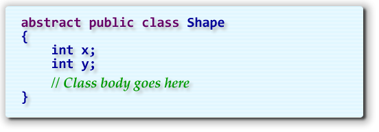
TheShape class contains fields that can be used to
store its location on the display (x,y).
Hands On: Playing Blackjack
As we work through this chapter I'll illustrate the different concepts we encounter by completing a simple game of Blackjack or 21, which you'll find included in this chapter's code folder as BeginnersBlackjack.
Before we can play Blackjack, though, we need a class to hold
a hand of playing cards. I've already created the basic Hand
class; you can find that in the code folder as well.
For Exercise 1, I want you to open the Hand
class and make it an abstract class. That's because it represents
a generic hand that you could use in any card game. To
complete this part, you'll only have to add one word to the
file, like this:
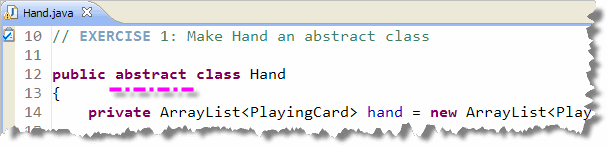
Abstract Variables
Even though we can't create Hand objects, (because
the class is now abstract), we can create Hand
variables. Let's see how that works:
- Open the BeginnersBlackjack.java and locate the task for Exercise 2.
- Create two
Handinstance variables. Name oneplayerand name the otherdealer. Note that DrJava does not give you a syntax error when you compile your code. It is perfectly legal to create a variable using anabstractclass:
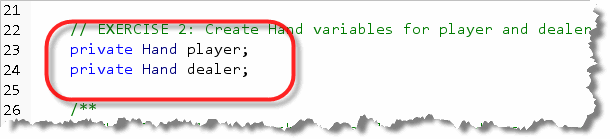
While Hand variables are perfectly acceptable,
Hand objects are not. If you try to instantiate the
Hand class, you'll get an error like this:
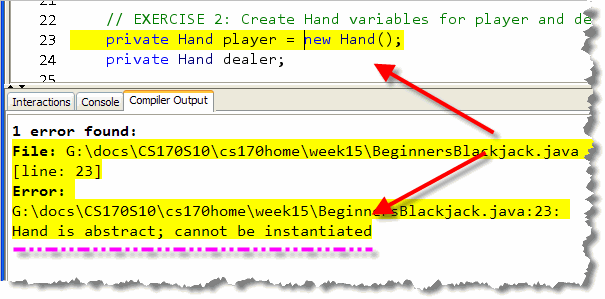
Try It Yourself
Try to instantiate a Hand object as I've
done here. Compile BeginnersBlackjack.java
after making this change. When you
are done, fix the error by removing the
new Hand() portion of the code.
Abstract Methods
In addition to regular fields and methods, an abstract class
may also contains one or more abstract methods.
An abstract method includes the keyword abstract
in the method header, and doesn't include a method body.
In place of the body, you simply put a semicolon (;).
Here's the Shape class
along with its abstract method:
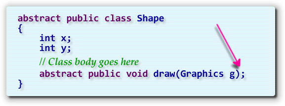
Exercise 3: An Abstract Method
Now that you know how to define an abstract method,
add the evaluateHand() method to the
Hand class. The method takes no parameters and simply
returns the number of points that the particular hand is worth.
Since each individual card game scores its hands differently,
you'll make the method abstract. Here's what your finished
method should look like:
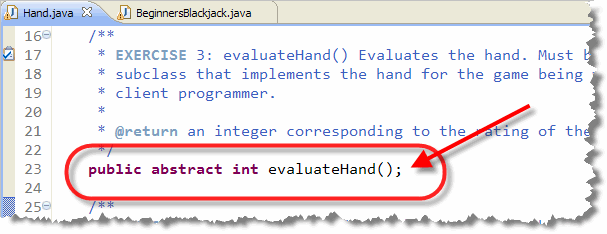
Try It Yourself
After adding the abstract evaluateHand()
method, compile the Hand class (so
you can see that there are no errors).
Adding More Methods
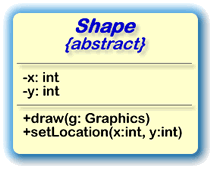
Abstract classes are not restricted to abstract methods like thedraw() method in the
Shape class; you can have as many regular methods as you'd
like, freely mixed in with your abstract methods.
The Shape class, for instance, could easily have
a setLocation() method, like that shown in
this UML diagram.
Your concrete methods are free to call call abstract
methods as part of their definition. Let's see how that works.
Exercise 4: Calling an Abstract Method
Add a non-abstract method to the Hand class named
compareTo(). The method takes one parameter: a Hand
that you'll compare the current hand to.
The method returns:
- 0 if both hands have the same point value.
- < 0 if the current hand has a point value lower than the other hand.
- > 0 if the current hand has a point value greater than the other hand.
So, how do we find the point values for the current hand and the
other hand? We call the abstract evaluateHand()
method. Here's what your code should look like when you've finished
this step:
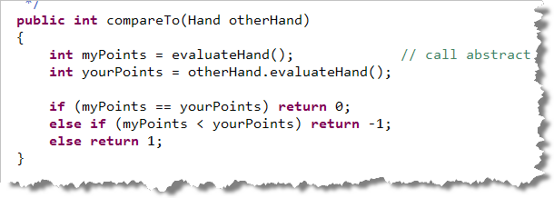
Try It Yourself
After adding the non-abstract compareTo()
method to the Hand class, compile it so
you can see that there are no errors.
Extending Abstract Classes
When you extend an abstract class, your new subclass should override every abstract method in its superclass, giving each a concrete implementation. The resulting subclass is a concrete class, and it can be used to create new objects.
Let's look at an example. To create the
Triangle (or Circle or
Square) classes, using
the abstract Shape class as the superclass,
all you need to do is:
- specify the
Shapeclass as the superclass in the class header. - make sure that you provide an implementation
for every abstract method in the
Shapeclass.
For the Triangle class, that means we must
define a draw() method that looks like this.
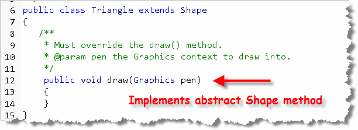
All you need to do is to do is add the code where indicated by the comments. Of course, in reality, you'll probably want to do a lot more. TheCircle class, for instance, might have a
radius field, the Square class
could have fields for width and height,
and the Triangle class could have fields and methods
for base and height.
Here's an applet created by a student at Chico State which puts
these ideas together into a simple drawing program. Take a look
at the abstract superclass, and each of the
concrete subclasses.
Hands-On: The BlackjackHand
Let's see how this works with our project. Follow the steps in the
previous section to create the BlackjackHand by extending
the Hand class (just like I did for Triangle):
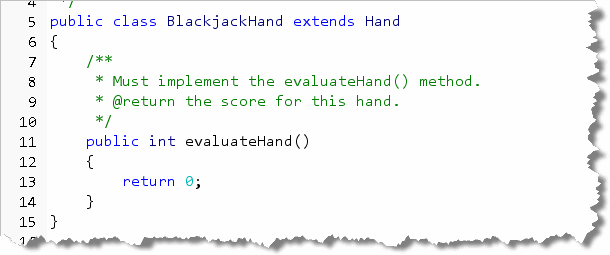
SinceevaluateHand() is abstract in the
Hand class, we must supply an
implemented version inside our BlackjackHand class:
that's our part of the specification contract.
The easiest way to find out what methods you must
supply, is to not supply any, and then let the Java
compiler tell you which ones are missing. Here's what
that looks like with BlackjackHand:
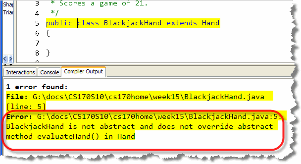
Evaluating Your Hand
Implementing the method for our simplified form of 21 is pretty
easy. We'll just count each of the cards, examining the card's
Rank. If it's an Ace, we'll always count it as 11 and
not worry about switching between values. Face
cards will all be worth 10, and the others will be worth whatever
value their rank indicates.
Probably the easiest way to do this is to just use a switch
statement, using Rank as the switch selector,
like this:
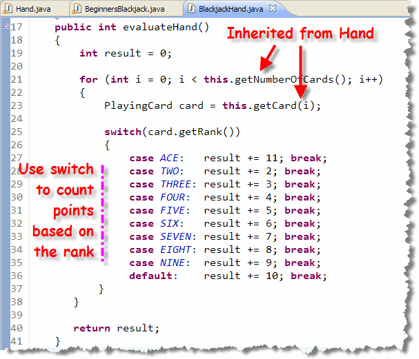
Exercise 5: Testing BlackjackHand
Now, let's add some testing code to the bottom of the
BeginnersBlackjack init() method. (Look for
the Exercise 5 marker.)
Here's what you should do in this section:
- Call the
newDeck()method. - Initialize
playerby using theBlackjackHand()constructor. Note that the variable is aHandbut the object it refers to is aBlackjackHand. - Remove the top two cards from the deck and add them to
the player's hand by calling
dealCard() - Pass the
playerand theplayerPileto theshowCards()method that is already written.
Run your program and it should automatically deal you a hand.
(We'll hook up the buttons in the next chapter, so don't worry that
they don't work.) If you have problems, check your code
against this example:
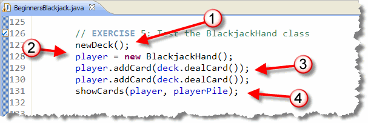
Try It Yourself
After adding the necessary code, compile BeginnersBlackjack, deal a hand, and run your program.
Exercise 6: Showing the Score
Although seeing the cards is nice, it would be better if the
program told us what the actual score was. To do that, I want
you to add a method named showScore().
The method should:
- takes a
Handobject as its parameter. (Notice that because it processedHandobjects, it will work with Go Fish as well as Poker or Canasta.) - Inside the method call the hand's
evaluateHand()method and display the result in thestatusLblon the screen.
Here's what your code should look like:
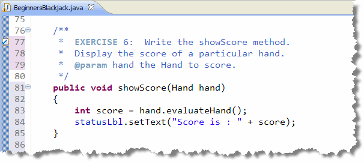
Once you've finished adding this code, head on back to theinit() method, (where you are testing the
BlackjackHand class), and call showScore()
passing your player variable. You should see something
like this: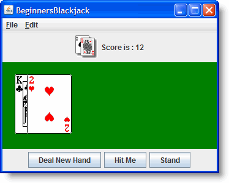
Try It Yourself
After completing the showScore() method,
(and calling it from the init()
method), run your program and show me some
cards and their score. Try it several times to
make sure your calculation code is always correct.

Abstract Classes Summary
- An abstract class is an incomplete class where certain methods are specified but not implemented. You cannot instaniate an abstract class, but you can create variables and extend the class.
- Specification inheritance is where a subclass inherits a set of mandatory responsibilities in the form of method signatures that subclasses must override, but does not inherit an implementation of those methods.
- Polymorphic inheritance is where inheritance is used to provide concrete types that implement varying behavior. Programmers using the type, create variables of the abstract type and attach concrete objects to those variables.
- Abstract classes provide a way of guaranteeing that all members of the family will implement a particular method. Abstract classes can force subclasses to override a particular method.
- To define an abstract class, simply add
the
abstractmodifier to the class header. You can do this even if the class contains no abstract methods. - To define an abstract method, add the modifier
abstractto the class header, and omit the class body, replacing it with a semicolon instead. If a class contains at least one abstract method, then it must be declared as anabstractclass. - When you extend an abstract class, you must override every abstract method in the abstract class. If you do not, then your subclass will be an abstract class as well. If you do, then the resulting class is known as a concrete class.